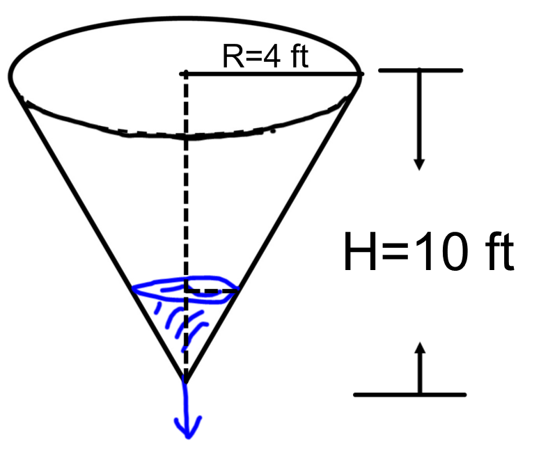

- (a)
- Let \(r\) be the radius of the water at depth \(h\). In the figure above, label \(r\) and
\(h\).
- (b)
- Find an expression for \(r\) in terms of \(h\).
- (c)
- The water in the tank is being drained at a rate of 2 feet\(^3\) per minute. What
is the rate of change of the water depth when the water depth is 3
feet? Let \(V\) be volume of water in the tank. We were given \(\dfrac {dV}{dt}=-2\) feet\(^3\)/min.
We can relate the volume of water in the tank to the water height by the formula for the volume of a cone: \(V=\dfrac {1}{3}\pi r^2 h\).
We have already found \(r\) in terms of \(h\) so subsituting gives us: \(V=\dfrac {1}{3}\pi \left (\dfrac {2}{5}h\right )^2\cdot h=\dfrac {4}{75}\pi h^3\)\begin{align*} V&=\dfrac {4}{75}\pi h^3\\ \dfrac {dV}{dt}&=\dfrac {4}{75}\pi \cdot 3h^2 \cdot \dfrac {dh}{dt} \\ \dfrac {dV}{dt}&=\dfrac {4}{25}\pi h^2 \cdot \dfrac {dh}{dt} \\ -2&=\dfrac {4}{25}\pi (3)^2 \cdot \eval {\dfrac {dh}{dt}}_{h=3} \\ \eval {\dfrac {dh}{dt}}_{h=3}&=-\dfrac {25}{18 \pi } ft/sec \end{align*}